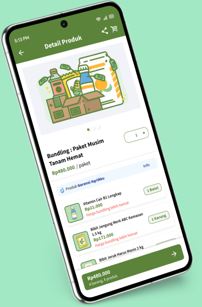
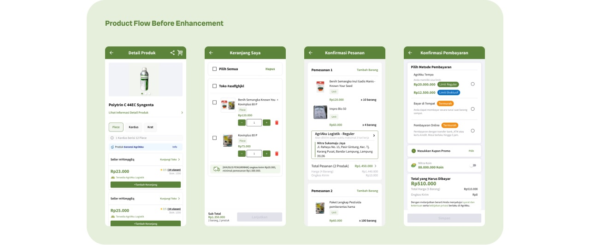
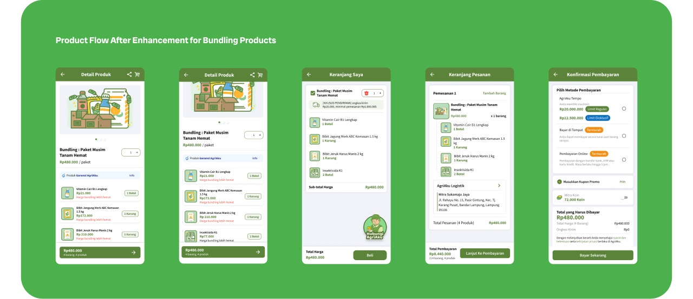
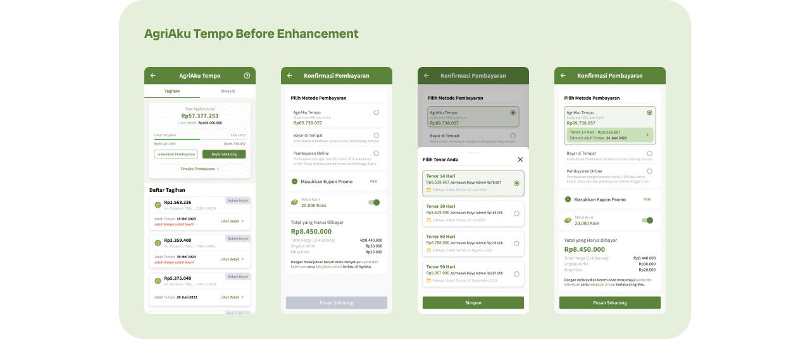
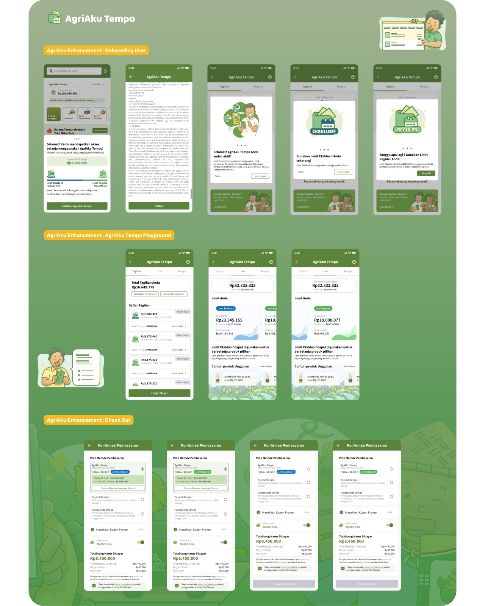

AgriAku Mitra
Two projects inside Indonesia’s agri super app.
Product bundling and a split credit limit — shipped for the Mitra app that farmers and shops buy from every day.

AgriAku — agriculture commerce, Indonesia Role: UI/UX Designer, AgriAku Mitra app Scope: Feature design, research, design system Team: Product, engineering, operations Stack: Android & iOS app
AgriAku
AgriAku is a leading local agribusiness company in Indonesia. Its Mitra app brings agricultural inputs — seed, fertiliser, pesticide — within reach of farmers and village shops anywhere in the country.
I designed for that app: features that had to work for a first-time smartphone user standing in a field, and still move the numbers the business cares about — order value, stock turnover, transactions.
Two of those projects are here. Each one starts with a real problem the business had, the analysis behind the decision, the screens that shipped, and what happened after.
Pick a project.
Two projects from the Mitra app. Open one to read it end to end — and switch between them at any point, without scrolling back up.
Project 01 · AgriAku Mitra
Product bundling
Background
The stock nobody was buying.
Product bundling matters in agriculture because what a farmer needs is tied to the planting cycle. Two problems came with that: slow-moving products sat long enough to risk expiry, and less popular items piled up as old stock.
The business wanted that stock moving without discounting it into the ground.
Why analysis
Because they move slowly and stay in inventory too long.
Because customers are not buying them as often as other products.
Because the product is less familiar to farmers.
Because they are new, or were never marketed well.
Because farmers are unwilling to take a risk on a product they don’t know.
Insight gained
The issue isn’t only slow movement — it is how farmers behave. Bundling a slow item with a fast-selling one raises both its visibility and its perceived value.
What that meant for design
Old stock wasn’t unpopular so much as unknown. Pairing it with essentials farmers already trust puts it in front of them at the moment they are buying anyway.
Solution & design approach
Build on the screen they already know.
Users already knew the product detail page, so the bundle was designed into it rather than as a new flow. That kept the learning curve flat, kept development light, and kept AgriAku’s look intact.
Product flow before

Product flow after bundling

Result & impact
What the numbers did.
January was the month before bundling, February the month after. I tracked three things: how much people spent per order, how fast stock moved, and how many orders included a bundle.
Average order value
Customers spent more per order once bundles made the bigger basket the easy choice.
Sell-through rate
Stock turned over faster, which is what takes expiry risk off the table.
Bundle adoption
More than half of February’s orders included a bundle — the behaviour change behind the other two numbers.
Project 02 · AgriAku Mitra
Tempo: separate limit
Background
One credit limit, doing two jobs.
AgriAku Tempo is the app’s pay-later facility: a Mitra shops now and settles later, inside a limit AgriAku sets for them. After several months of it running well, the business saw a chance to use that limit to push specific product categories.
That meant splitting one limit into two — a general limit and an exclusive one reserved for chosen categories — without making the Mitra feel their credit had been cut.
AgriAku Tempo before the change

Solutioning
Make the split obvious, then get out of the way.
Three moments carried the change. Onboarding explains the two limits the first time a Mitra meets them. The Tempo screen shows each limit and what is left of it. Checkout picks the right limit for the basket and says which one is being used.
The point was that a Mitra should never have to work out why a product can be paid for one way and not another.
Onboarding, Tempo screen and checkout

And the system under both.
The features above are what shipped. This is the part that made shipping them quick — a shared system for the Mitra app, kept apart here because it is a different kind of work.
Foundations
Components
Patterns & handover
What I bring from AgriAku.
Three years of designing for people who are buying with their own money, on a phone, in a hurry — and of proving afterwards whether the design worked.
Every project here was tied to a business metric before it was drawn, and measured after it shipped.
Five whys, user behaviour data and a clear hypothesis — so the solution answers the real cause.
Enhancing familiar screens instead of inventing new ones: lower learning curve, less build time.
Shared foundations and components, documented, so both projects looked like one product.